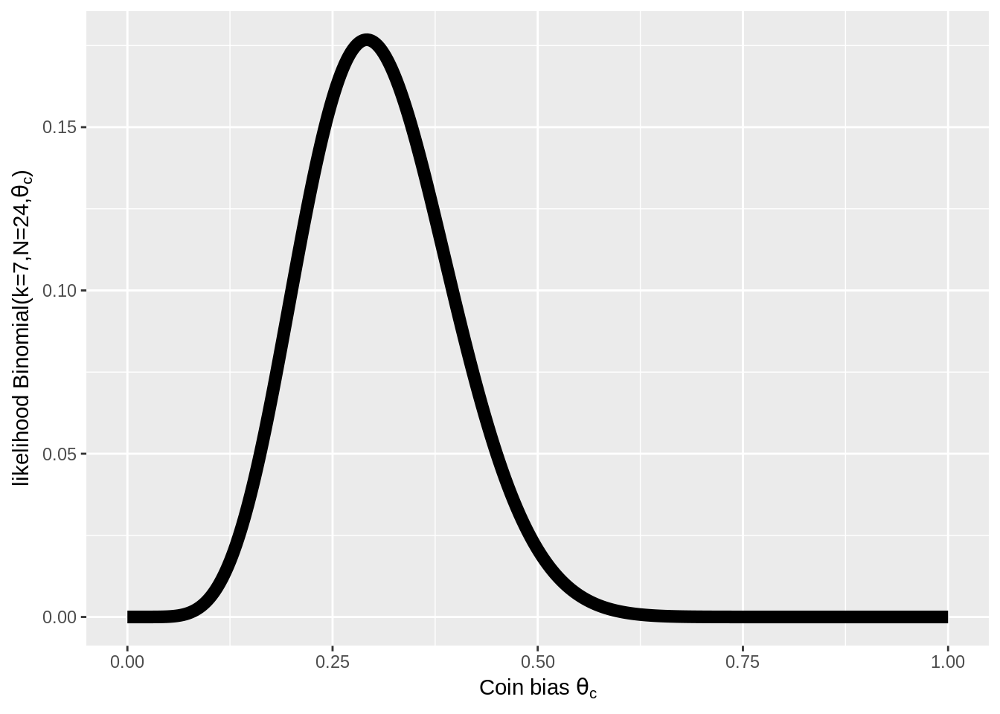
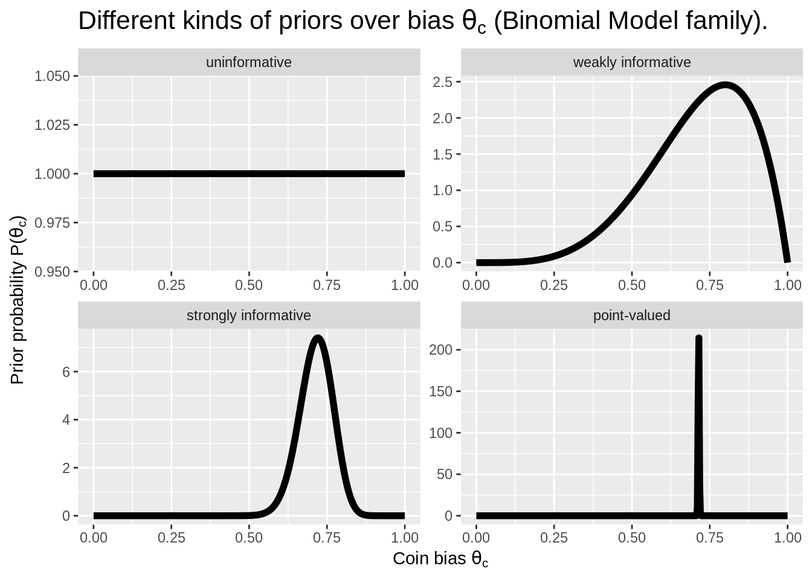
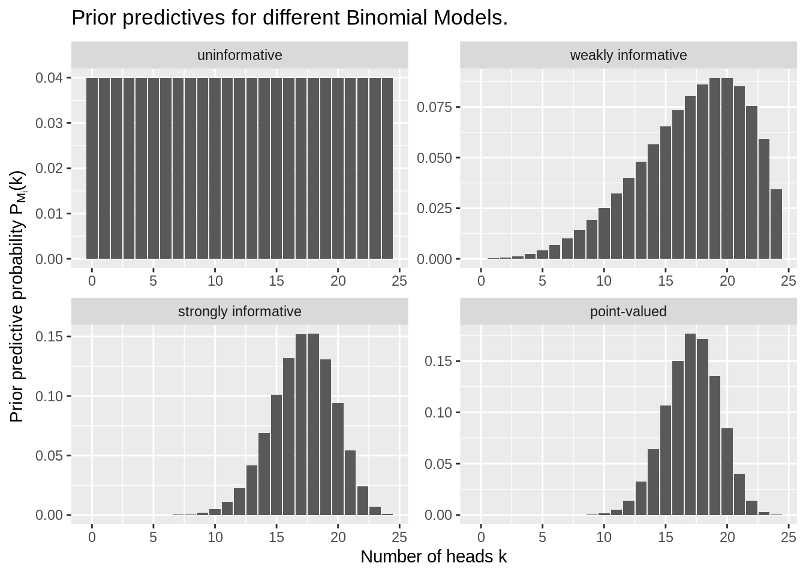

## [1] 5.783981e-098.3 Parameters, priors, and prior predictions
We defined a Bayesian model as a pair consisting of a parameterized likelihood function and a prior distribution over parameter values:
\[ \begin{aligned} & \text{Likelihood: } & P_M(D \mid \theta) \\ & \text{Prior: } & P_M(\theta) \end{aligned} \]
In this section, we dive deeper into what a parameter is, what a prior distribution \(P_M(\theta)\) is, and how we can use a model to make predictions about data.
The running example for this section is the Binomial Model as introduced above. As a concrete example of data, we consider a case with \(N=24\) coin flips and \(k=7\) head outcomes.
8.3.1 What’s a model parameter?
A model parameter is a value that the likelihood depends on. In the graphical notation we introduced in Section 8.2, parameters usually (but not necessarily) show up as white nodes, because they are unknowns.
For example, the single parameter \(\theta_c\) in the Binomial Model shapes or fine-tunes the likelihood function. Remember that the likelihood function for the Binomial Model is:
\[ P_M(k \mid \theta_c, N) = \text{Binomial}(k, N, \theta_c) = \binom{N}{k}\theta_c^k(1-\theta_c)^{N-k} \]
To understand the role of the parameter \(\theta_c\), we can plot the likelihood of the observed data (here: \(k=7\) and \(N=24\)) as a function of \(\theta_c\). This is what is shown in Figure 8.2. For each logically possible value of \(\theta_c \in [0;1]\) on the horizontal axis, Figure 8.2 plots the resulting likelihood of the observed data on the vertical axis. What this plot shows is how the likelihood function depends on its parameter \(\theta_c\). Different values of \(\theta_c\) make the data we observed more or less likely.

Figure 8.2: Likelihood function for the Binomial Model, for \(k=7\) and \(N=24\).
Exercise 8.1
- Use R to calculate how likely it is to get \(k=22\) heads when tossing a coin with bias \(\theta_c = 0.5\) a total of \(N=100\) times.
- Which parameter value, \(\theta_c = 0.4\) or \(\theta_c = 0.6\), makes the data from the previous part of this exercise (\(N=100\) and \(k=22\)) more likely? - Give a reason for your intuitive guess and use R to check your intuition.
The number of heads \(k=22\) is (far) less than half of the total number of coin flips \(N=100\). This should be more likely for a bias towards tails than for a bias towards heads. So, we might assume that \(\theta_c=0.4\) makes the data more likely than \(\theta_c = 0.6\).
## [1] 6.402414e-05## [1] 8.815222e-158.3.2 Priors over parameters
The prior distribution over parameter values \(P_M(\theta)\) is an integral part of a model when we adopt a Bayesian approach to data analysis. This entails that two (Bayesian) models can share the same likelihood function, and yet ought to be considered as different models. (This also means that, when we say “Binomial Model” we really mean a whole class of models, all varying in the prior on \(\theta\).)
In Bayesian data analysis, priors \(P_M(\theta)\) are most saliently interpreted as encoding the modeler’s prior beliefs about the parameters in question. Ideally, the beliefs that support the specification of a prior should be supported by an argument, results of previous research, or other justifiable motivations. However, informed subjective priors are just one of the ways to justify priors over parameters.
There are three main types of motivations for priors \(P_M(\theta)\); though the choice of a particular prior for a particular application might have mixed motives.
- Subjective priors capture the modeler’s genuine subjective beliefs in the sense described above.
- Practical priors are priors that are used pragmatically because of their specific usefulness, e.g., because they simplify a mathematical calculation or a computer simulation, or because they help in statistical reasoning, such as when skeptical priors are formulated that work against a particular conclusion.
- Objective priors are priors that, as some argue, should be adopted for a given likelihood function to avoid conceptually paradoxical consequences. We will not deal with objective priors in this introductory course beyond mentioning them here for completeness.
Orthogonal to the kind of motivation given for a prior, we can distinguish different priors based on how strongly they commit the modeler to a particular range of parameter values. The most extreme case of ignorance are uninformative priors which assign the same level of credence to all parameter values. Uninformative priors are also called flat priors because they express themselves as flat lines for discrete probability distributions and continuous distributions defined over an interval with finite lower and upper bounds.46 Informative priors, on the other hand, can be weakly informative or strongly informative, depending on how much commitment they express. The most extreme case of commitment would be expressed in a point-valued prior, which puts all probability (mass or density) on a single value of a parameter. Since this is no longer a respectable probability distribution, although it satisfies the definition, we speak of a degenerate prior here.
Figure 8.3 shows examples of uninformative, weakly or strongly informative priors, as well as point-valued priors for the Binomial Model. The priors shown here (resulting in four different Bayesian models all falling inside the family of Binomial Models) are as follows:
- uninformative : \(\theta_c \sim \text{Beta}(1,1)\)
- weakly informative : \(\theta_c \sim \text{Beta}(5,2)\)
- strongly informative : \(\theta_c \sim \text{Beta}(50,20)\)
- point-valued : \(\theta_c \sim \text{Beta}(\alpha, \beta)\) with \(\alpha, \beta \rightarrow \infty\) and \(\frac{\alpha}{\beta} = \frac{5}{2}\)

Figure 8.3: Examples of different kinds of Bayesian priors for coin bias \(\theta_c\) in the Binomial Model.
8.3.3 Prior predictions
How should priors be specified for a Bayesian model? Several aspects might inform this decision. Practical considerations may matter (maybe the model can only be implemented and run with common software for certain priors). If subjective beliefs play a role, it may be hard to specify an exact shape of the prior distribution over some or all parameters, especially when these parameters are not easily interpretable in an intuitive way. Therefore, two principles for the specification of priors are important:
- Sensitivity analysis: Researchers should always check diligently whether or how much their results depend on the specific choices of priors, e.g., by running the same analysis with a wide range of different priors.
- Inspecting the prior predictive distribution: It is one thing to ask whether a particular value for some parameter makes intuitive or conceptual sense. It is another at least as important question whether the predictions that the model makes about the data are intuitively or conceptually reasonable from an a priori perspective.47
Indeed, by specifying priors over parameter values, Bayesian models make predictions about how likely a particular data outcome is, even before having seen any data at all. The (Bayesian) prior predictive distribution of model \(M\) is a probability distribution over future or hypothetical data observations, written here as \(D_{\text{pred}}\) for “predicted data”:
\[ \begin{aligned} P_M(D_{\text{pred}}) & = \sum_{\theta} P_M(D_{\text{pred}} \mid \theta) \ P_M(\theta) && \text{[discrete parameter space]} \\ P_M(D_{\text{pred}}) & = \int P_M(D_{\text{pred}} \mid \theta) \ P_M(\theta) \ \text{d}\theta && \text{[continuous parameter space]} \end{aligned} \]
The formula above is obtained by marginalization over parameter values (represented here as an integral for the continuous case). We can think of the prior predictive distribution also in terms of samples. We want to know how likely a given logically possible data observation \(D_{\text{pred}}\) is, according to the model with its a priori distribution over parameters. So we sample, repeatedly, parameter vectors \(\theta\) from the prior distribution. For each sampled \(\theta\), we then sample a potential data observation \(D_{\text{pred}}\). The prior predictive distribution captures how likely it is under this sampling process to see each logically possible data observation \(D_{\text{pred}}\). Notice that this sampling process corresponds exactly to the way in which we write down models using the conventions laid out in Section 8.2, underlining once more how a model is really a representation of a random process that could have generated the data.
In the case of the Binomial Model when we use a Beta prior over \(\theta\), the prior predictive distribution is so prominent that it has its own name and fame. It’s called the Beta-binomial distribution. Figure 8.4 shows the prior predictions for the four kinds of priors from Figure 8.3 when \(N = 24\).

Figure 8.4: Prior predictive distributions for Binomial Models with the Beta-priors from the previous figure.
It is possible to use uninformative priors also for continuous distributions defined over an unbounded interval, in which case we speak of improper priors (to remind ourselves that, mathematically, we are doing something tricky).↩︎
Obviously, priors should not be chosen after having seen the data in such a way that they engineer in the conclusions that a researcher wants to reach because of prior conviction, pride or ambition.↩︎